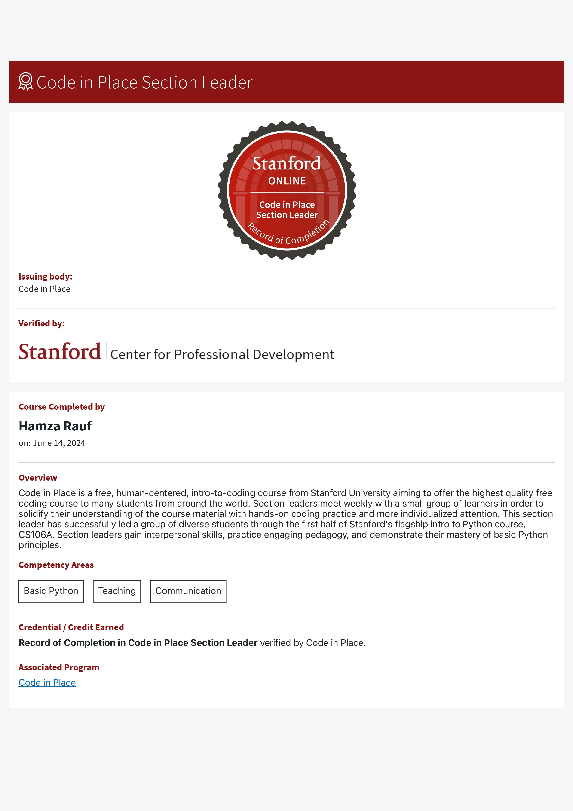
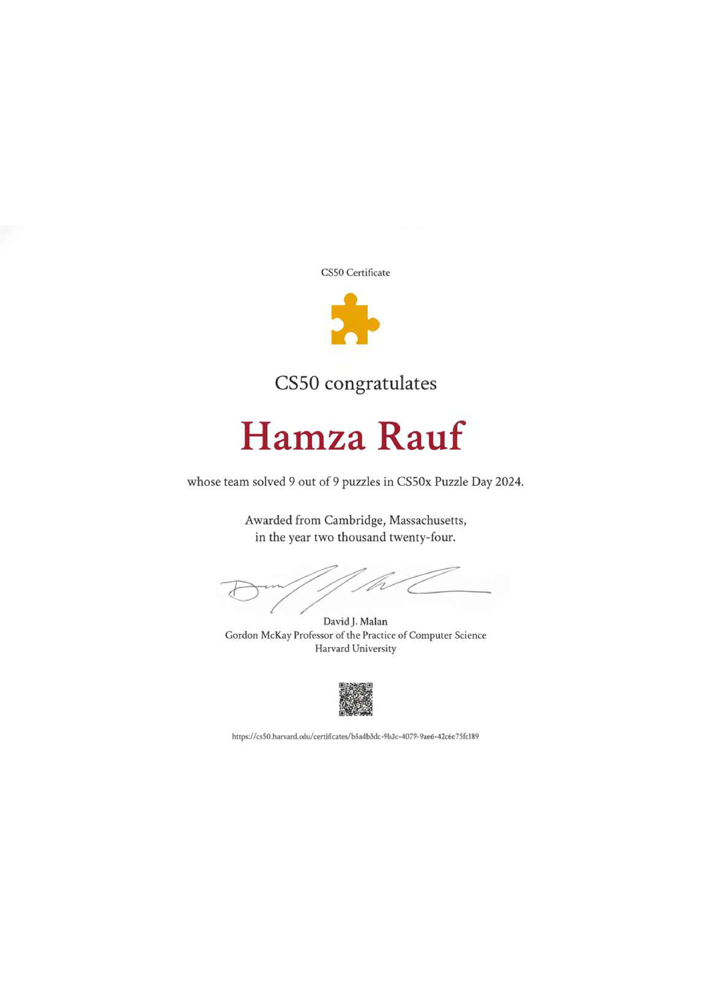

Who I Am
ii.
Hamza Rauf - Senior Software Engineer and Research Assistant with industry and research experience, and a strong interest in AI systems that work under real deployment constraints.


331
GRE score, with IELTS 7.0 and a B.S. in Computer Science from Sukkur IBA University.
Top 5%
Top 5% of my class, with CGPA 3.31 / 85% and a strong base in data structures, HCI, and enterprise systems.
6+
Years of AI and software experience across backend, frontend, cloud, automation, and production systems.
Lab fit
Research discipline, reliable engineering, hands-on model training, clear writing, and mentoring.
Evidence of readiness
iii.
Academic and research achievements
Academic proof
- Won a fully funded merit scholarship as one of the top 100 students in the country.
- Earned distinction in 24 courses, including data structures, HCI, and enterprise app development.
- Received a professional job offer before graduation.

Research proof
- Worked as a Research Assistant with Dr. Umair Khan, a Stanford top 2% scientist.
- Published multiple papers, including first-author Q1 work in Complex & Intelligent Systems and co-authored Q1 work in Engineering Applications of Artificial Intelligence.
- Worked with systematic reviews, surveys, evaluation metrics, LaTeX, Atlas.ti, and SPSS.


Recognition
- Employee of the Year in both 2023 and 2024.
- Section leader at Stanford Code in Place 2024.
- Part of the winning team at the NETSOL AI Hackathon.


Published work
iv.
Research experience: efficient and deployable AI


Current research
v.
Bridging language, signals, and context-rich classification

Current paper from my CV
Embodied Emotion Classification via Small LLMs Using Prompting Strategies
Current question
- Which prompting strategy works best for small LLMs on fine-grained embodied emotion classification?
- Compares zero-shot, k-shot, chain-of-thought, and chain-of-verification prompting.
- Measures macro and per-class F1 across Ekman's six emotions under limited compute.
The deeper skill here is modeling indirect human signals under uncertainty, not only solving one embodied-AI task.
How I connect it to health informatics
- NLP can help structure patient language, survey responses, and care-management notes.
- Compact LLMs can support privacy-sensitive, lower-cost medical AI prototypes.
- Prompting, verification, and evaluation fit trustworthy health decision support.
- The same mindset can support early Alzheimer's screening and social determinants of health research.